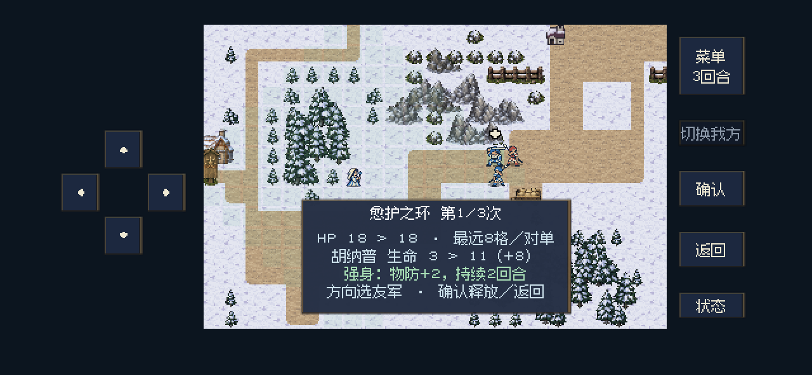
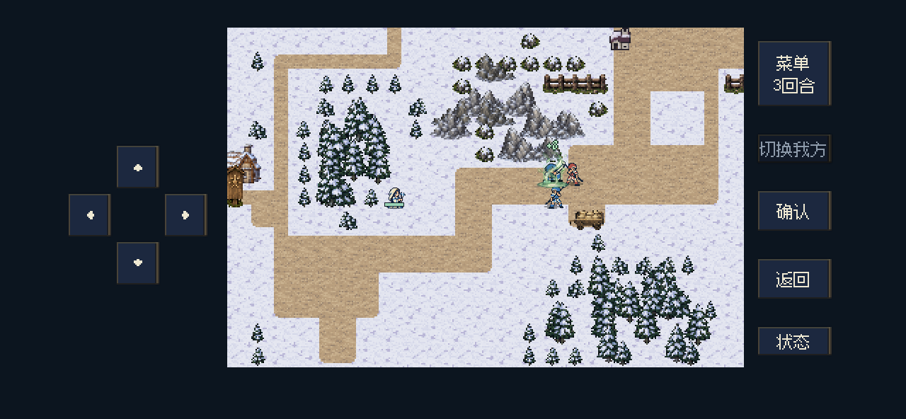
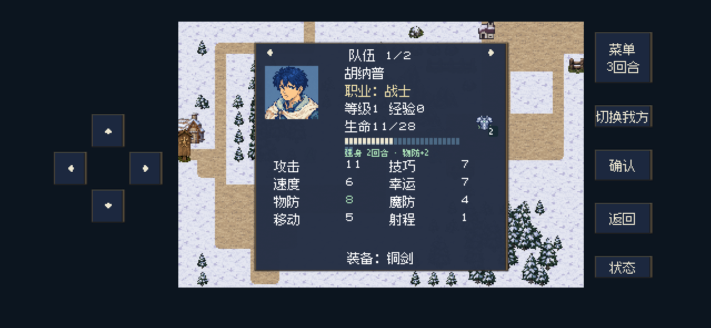
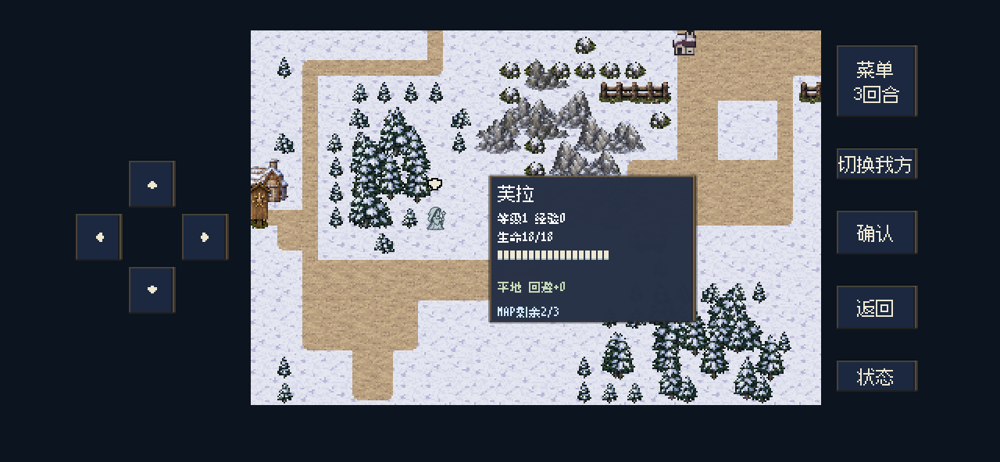

REVENGE & MEMORIES / INTEGRATED SUPPORT MAP
治疗 MAP 已接入
正式 Godot 场景单体治疗 · 强身物防＋2 · 持续2回合
以下为正式游戏代码的后台视口渲染，使用独立演示摆位。可播放动画与恢复音效，核对三档代价和强身倒计时。
PRODUCTION ANIMATION
愈护之环 · 实际演出
0.04秒开始动作，0.30秒释放并播放恢复音效，0.58秒显示一次治疗结果。角色双脚固定，邻近友军与敌人不会被治疗。音效尾音不阻塞游戏操作。
三档使用 · 正式界面


疗愈师治疗量：A／A＋3／A＋6。A为人物攻击基础值。
STRONG BODY / ACTUAL TURN STATE
强身倒计时 · 2 → 1 → 到期
施放回合与下一回合的敌方阶段都有物防＋2。再下一己方回合开始时，图标、角标和绿色加防文案一起移除；重复施放刷新时间，物防不叠加。
人物详情与施法者代价


接入与验证记录
治疗专项与原有主角 MAP、音效检查通过；存读档、回溯、重试与演习的状态生命周期已验证。截图由1280×592、844×390与512×300后台视口生成，文字安全区与人物详情布局检查通过。本页没有操作用户存档或更新手机。